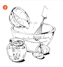

Вегетарианская брускетта с тофу в медово-горчичном соусе с лисичками
вегетарианская кухня
Рецепт от Шеф-повара вегетарианского ресторана
Рикардо Моралес
Рикардо веган уже год (до этого много лет был вегетарианцем), но пока не строго придерживается всех правил: мясо и
молочные продукты не покупает, но если кто-то угостит сыром, может съесть. По его словам, в Беларуси есть проблема с
ассортиментом вегетарианских продуктов — здесь, в отличие от Торонто, в супермаркетах нет специальных отделов, выбор
очень небольшой.
Рецепт:
Ингридиенты
Хлеб (любой, на вкус) - 6 кусочков
Горчично-медовый майонез - 120 г
Ростки люцерны - 100 г
Тофу (из расчёта 60 г на каждый кусок хлеба) - 400 г
Лук - 200 г
Лисички - 200 г
Медово-горчичный майонез
Веганский майонез - 60 г
Мёд - 20 г
Горчица - 40 г
Веганский майонез
Несладкое соевое молоко - 50 г
Масло канолы - 100 г
Горчичный порошок - 5 г
Яблочный уксус - 10 г
Нектар агавы - 10 г
Морская соль - 10 г
Лимонный сок - 10 г
Измельчённый чеснок - 8 г
Маринад
Вода - 250 мл
Соус тамари - 60 г
Чеснок - 3 г
Кориандр - 3 г
Приготовление
Приготовить маринад.
— перемешать все ингредиенты. Нарезать тофу из расчёта 1 ломтик
на брускетту (толщина тофу на брускетте 1-1,5 см).Оставить тофу в маринаде
на полтора-два часа.
Веганский майонез. Соединить все ингредиенты и измельчить в блендере до
однородной массы.

Медово-горчичный майонез. Перемешать все ингредиенты в миске венчиком, отложить.
Обжарить лук и грибы в течение 1 минуты. Отдельно обжарить тофу, вынув из
маринада.
Обжарить хлеб и смазать медово- горчичным майонезом. На хлеб положить тофу, грибы,
лук и ростки люцерны. Подавать с листьями салата.